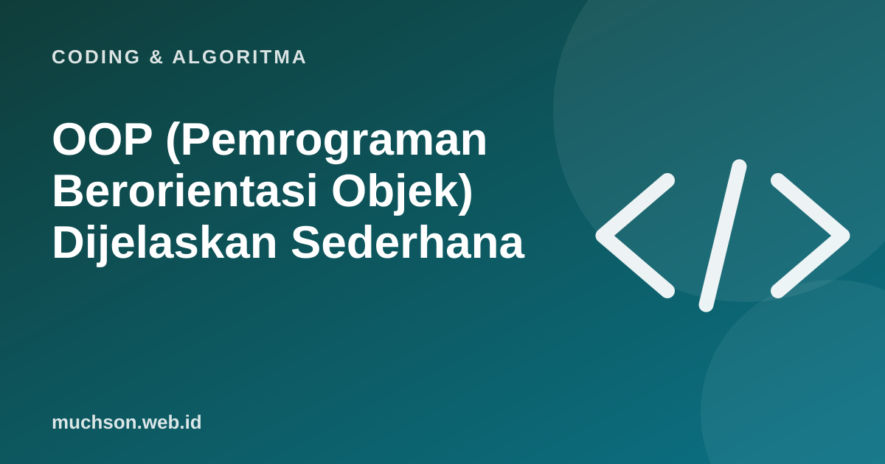

Beranda › Artikel › Coding & Algoritma
Coding & AlgoritmaOOP (Pemrograman Berorientasi Objek) Dijelaskan Sederhana
OOP (Object-Oriented Programming) sering menjadi materi yang membuat mahasiswa dan pemula bingung: class, object, inheritance, polymorphism. Padahal idenya dekat dengan cara kita memandang dunia sehari-hari: ada cetakan, dan ada benda-benda yang dibuat dari cetakan itu.

Class dan object: cetakan dan kue
Class adalah cetakan atau rancangan. Object adalah benda nyata yang dibuat dari cetakan itu. Cetakan kue bintang (class) bisa dipakai membuat banyak kue (object). Semua kue berbentuk bintang, tetapi masing-masing bisa punya topping berbeda.
class Kucing:
def __init__(self, nama, warna):
self.nama = nama # atribut
self.warna = warna
self.lapar = True
def makan(self): # method
self.lapar = False
return f"{self.nama} kenyang"
def bersuara(self):
return "Meong!"
oyen = Kucing("Oyen", "oranye") # object 1
mochi = Kucing("Mochi", "putih") # object 2
print(oyen.makan()) # Oyen kenyang
print(mochi.lapar) # True| Istilah | Artinya | Di contoh |
|---|---|---|
| Class | Cetakan | Kucing |
| Object (instance) | Benda dari cetakan | oyen, mochi |
| Atribut | Data milik object | nama, warna, lapar |
| Method | Perilaku atau aksi object | makan(), bersuara() |
| Constructor | Fungsi yang dijalankan saat object dibuat | __init__ |
Anak yang belajar Scratch sudah mengenal ide ini lewat clone: satu sprite menjadi cetakan, dan setiap clone punya posisi dan variabel lokalnya sendiri.
Empat pilar OOP
1. Enkapsulasi: membungkus data
Data dan cara mengubahnya disatukan dalam object, dan akses langsung ke data dibatasi. Saldo rekening tidak diubah sembarangan, melainkan lewat method setor() dan tarik() yang memeriksa aturan.
class Rekening:
def __init__(self, pemilik):
self.pemilik = pemilik
self._saldo = 0 # konvensi: jangan diakses langsung dari luar
def setor(self, jumlah):
if jumlah <= 0:
raise ValueError("Jumlah harus positif")
self._saldo += jumlah
def tarik(self, jumlah):
if jumlah > self._saldo:
raise ValueError("Saldo tidak cukup")
self._saldo -= jumlah
@property
def saldo(self):
return self._saldo2. Abstraksi: sembunyikan yang rumit
Pengguna object cukup tahu apa yang bisa dilakukan, tidak perlu tahu bagaimana. Saat menekan tombol rem mobil, Anda tidak perlu memahami hidrolik.
3. Inheritance: pewarisan
Class baru bisa mewarisi atribut dan method class lain, lalu menambah atau mengubahnya.
class Hewan:
def __init__(self, nama):
self.nama = nama
def bersuara(self):
return "..."
class Kucing(Hewan):
def bersuara(self):
return "Meong!"
class Anjing(Hewan):
def bersuara(self):
return "Guk!"4. Polymorphism: satu perintah, banyak bentuk
Object berbeda bisa menanggapi perintah yang sama dengan caranya masing-masing.
kebun_binatang = [Kucing("Oyen"), Anjing("Bruno"), Kucing("Mochi")]
for h in kebun_binatang:
print(h.nama, h.bersuara())
# Oyen Meong!
# Bruno Guk!
# Mochi Meong!Kapan OOP berguna, kapan tidak
| Cocok | Kurang perlu |
|---|---|
| Program besar dengan banyak "benda" (pengguna, produk, pesanan) | Skrip kecil sekali pakai |
| Banyak jenis yang berbagi perilaku (berbagai metode pembayaran) | Pengolahan data sederhana |
| Game dengan banyak karakter | Fungsi matematika murni |
Kesalahan umum pemula adalah membuat hierarki inheritance yang terlalu dalam. Banyak programmer berpengalaman menyarankan lebih memilih komposisi (object berisi object lain) daripada pewarisan bertingkat-tingkat.
Tanya jawab
Apa itu OOP?
Apa beda class dan object?
Apa saja pilar OOP?
Bahasa apa yang mendukung OOP?
Sumber dan bacaan lanjut
- Python: Classes (tutorial resmi)
- MDN: JavaScript objects dan pemrograman berorientasi objek
- Clone di Scratch: satu sprite banyak salinan (artikel terkait)